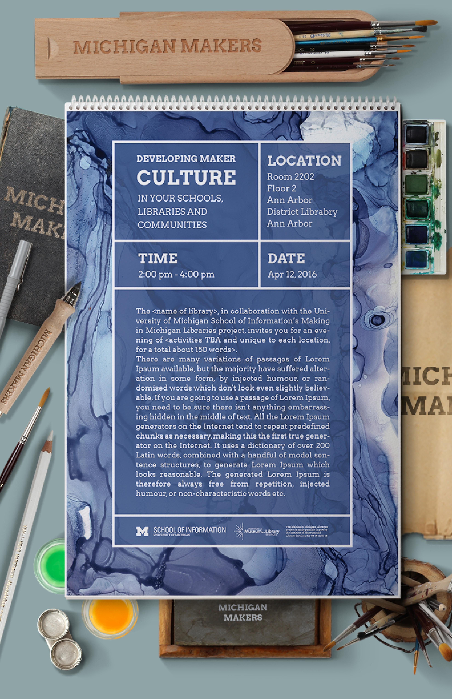

01. problem
Research on the Disease
We interviewed Mr. Doug Dault, the Director of the Silver Club Memory Loss Programs to the UofM Health System and reviewed the related literature. One important lesson we learned from the preliminary research was:
Every patient suffers differently. Two persons won’t have same deterioration rate, even if they all struggle with the same disease. This meant that we must narrow down our target audience. To find one solution for all AD patients would be too ambitious for us.
Key Question
- Spatial disorientation is a first and obvious sign that appears in Alzheimer’s disease. It is influenced by the reduction of cognitive mapping ability and may affect patient’s outdoor activities.
- Research has shown that exercise keeps patients staying functional and decelerates deterioration, even though the Alzheimer disease cannot be alleviated with today’s medical treatment and technology.
02. process
Data of Selected Users
To solve this, we conducted a focus group to uncover the general experience of participants, and a series of semi-structured interviews 5 selected participants from the focus group, to gain more insights into AD patients’ practices, values, and goals. In addition, we interviewed one family member to learn from a family member's perspective.

Focus Group
10 participants
1.5 hours

Individual Interview with Selected Patients
5 participants
1.5 hour per person

Individual Interview with Family Member
1 participant
1 hour


Research on Users' Exercising Behaviors
- Most participants exercise more than 3 times a week, but they rarely go outside alone. That is to say, they would use the running machine for research purposes or climbing the stairs at home, but not go outside without the company of their family members or care partners.
- Patients are unwilling to walk outdoors alone due to various reasons: the anxiety of getting lost, the fear of being injured, and lack of intention for independent activities. And from the perspective of their family members, it is also their biggest concern if anything happens to the patients.

- As a result, the living environment and activity range of patients is restrained. They would only go outside to certain places in the neighborhood, such as grocery stores and markets, and they lack independence to visit other interesting or memorable spots.
Research on Users' Device Preferences
- Most of the participants don’t use smartphones or even don’t know what a smartphone is, but eight out of ten people are wearing watch or medical emergency bracelets.


- Patients are generally familiar with audio interaction mechanism, rather than visual interfaces on devices.
- If they walk outdoors alone and cannot handle unexpected situations, patients are aware of how to call for help.
Observations on What Users love
03. solution
Ideate the Design
Compared to existing GPS navigation systems for AD patients, Moments not only has a GPS navigation feature, but also empowers AD patients by connecting them with their beloved family. The key features of Moments are:
-
Customize the routes with voice navigation
A voice navigation was previously recorded by the family, and it directs the route for the patients to a pre-setting destination.Photo / Video Bonus
 Family can insert videos and pictures related to the specific spot into the system. Videos and pictures can remind patients of memorable moments at certain spots with their family. A family member can decide when to show videos or pictures while navigating. When the patient arrives at certain spots where their family took the video or the photos, the system automatically shows a question whether to view the video or not. Patients can decide whether to watch them or not through voice.
Family can insert videos and pictures related to the specific spot into the system. Videos and pictures can remind patients of memorable moments at certain spots with their family. A family member can decide when to show videos or pictures while navigating. When the patient arrives at certain spots where their family took the video or the photos, the system automatically shows a question whether to view the video or not. Patients can decide whether to watch them or not through voice.Emergency Mechanism
The mechanism enables AD patients to call for help from their caregivers, whenever unexpected and uncontrollable accidents happen.
04. iterations
Usability Testing
Scenario 1
User travels around the Silver Club center on the specific route and triggers the video hint along the path.
Scenario 2
User travels around the Silver Club center on the specific route and used the emergence mechanism to call for help.


Updates Based on the Feedbacks
-
Distance Reminder
Some participants felt confused when they were reminded to make a turn: the reminder was just an arrow so they didn't know where exactly where to change the directions. Thus, we decided that the device should incorporate distance reminder, both audible and visual, to remind users of the current process and the next step.
-
Bone Conduction Headphone
Earphones was used in the user testing. However, when working outside, some participants complained that they could either hear the noises from the surroundings or the voice navigation. This led us to adopt bone conduction headphones to reduce the burden of divided attention of both walking and hearing.
05. final
Together, we make every moment matter
Wayfinding is way easy

Security comes first

Relive the moments

05. deliverables
View Final Paper06. Reflection
UX Research
Focus Group
Interview
Affinity Wall
UX Design
Brainstorming
Wireframing
Prototyping
Usability Testing